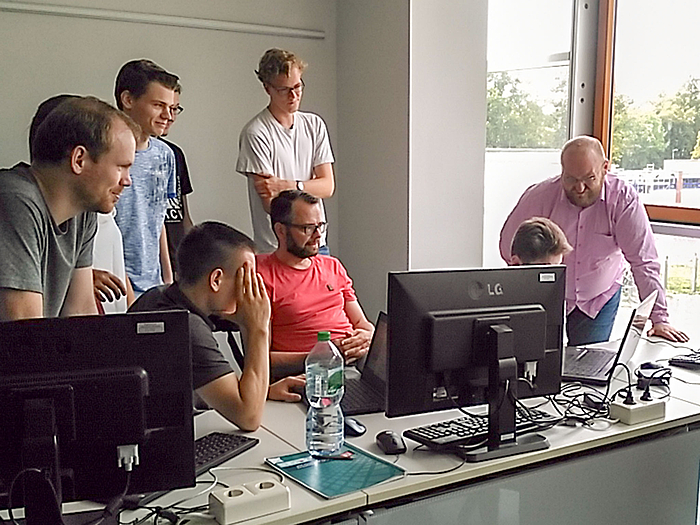
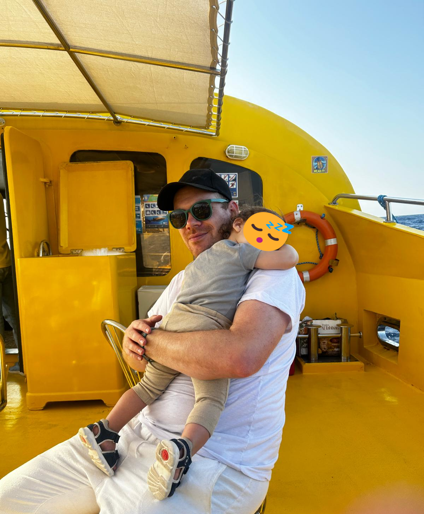

in teaching
I currently teach students the fundamentals of data processing and analysis, along with broader concepts in (statistical) modeling. The courses are specifically designed for students in forensic science and biotechnology. As a former biotechnology student, my academic background is rooted in bioinformatics and molecular biology, with a specialization in computational analysis of protein sequences and structures. It was courses on these topics that I was first appointed to teach following my master’s studies.
Teaching has always been part of my academic journey since then. I actually gained my first experiences by giving supplementary tutorials in bioinformatics, particularly helping students get to grips with coding in Java and Perl. Over the years, I took on more advanced courses in bioinformatics and, gradually, this engagement evolved into teaching courses with broader scopes; such as tutorials in R and Python programming, data visualization, and statistics.
Here’s a list of selected courses I’m currently teaching, along with some I’ve taught in the past.
Students and colleagues discussing results and data workflows. This photo was taken during our STEM summer school in 2019. I’m standing on the far left. I was involved in teaching the fundamentals of data visualization and processing.
in research
Educational activities require my full attention and, hence, drive my everyday academic schedule. Yet, I’m in the prestigious position to still be able to contribute to on-going research in Mittweida, in particular research conducted at the forensic research group–the Forensic Science Investigation Lab (FoSIL). There I consult colleagues regarding statistical modelling and machine learning; but I am also actively involved in projects focused on forensic anthropometry and bloodstain analyses, where I provide support as a data scientist. Recent scientific output includes the formulation of a Bayesian statistical model for the inference of blood stain age. There is also a complete list of publications, if you are interested. To find out more about the Forensic Science Investigation Lab, there is much to explore here.

My little guy and I on vacation, taking a boat trip on the Red Sea. Gazing at vast marine life during this semi-submarine ride must have been very exhausting for him.
off campus
When I’m not teaching or working on research projects, you’ll most likely find me outdoors – hiking, exploring nature, or simply enjoying time outside. I dedicate much of my energy and love to spending time with my little one, which brings me endless joy and perspective. Music is another important part of my life: whether strumming a six-string guitar or slapping the four string, playing is both a creative outlet and a way to recharge. I also have a deep curiosity for data – I’m a bit obsessed with statistics, often collecting data just for fun, digging into scientific literature, and exploring new ways to visualize complex information.